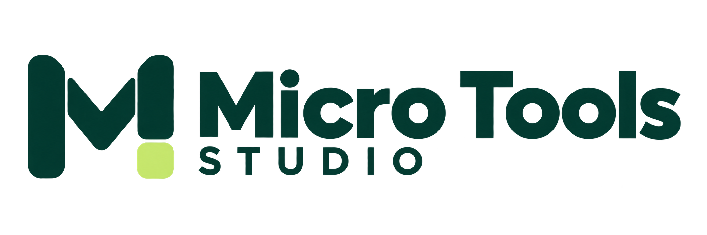

$19USD · one-time
Invoices & follow-ups
InvoiceForge
Track settled receipts, see what remains, and prepare your next client message.
For freelancers and solo service businesses.

PRACTICAL TOOLS FOR EVERYDAY WORK
A studio of focused digital kits for the jobs that keep piling up. Find the tool for your task, try the workflow, and make it your own.
One-time downloads · Clear instructions · No subscription
THE MICRO TOOLS COLLECTION
Each kit has a clear purpose, a working preview and a guide to getting started. Choose the one that fits the task.
Five focused tools. Choose the task you need help with.
Invoices & follow-ups
Track settled receipts, see what remains, and prepare your next client message.
For freelancers and solo service businesses.
Renewal records
Keep renewal dates, record checks and next actions together.
For small-team training and operations coordinators.
Website review & handoff
Record reproducible findings, check fixes and prepare a useful handoff.
For web designers and independent site owners.
Warranty evidence
Organize source records, a timeline and the files you plan to include.
For households and small businesses.
PROJECT READINESS, ONBOARDING & SCOPE CHANGES
Review the prerequisites for kickoff, prepare a client brief and keep additional work linked to its project.
For small design, web and content teams.
These tools help organize your work. They do not send messages, collect client payments, verify credentials, automatically audit a site, or guarantee a claim outcome.
FROM BROWSING TO USING
No mystery bundle. See the purpose, try a fictional example, and open a simple guide when your download arrives.
Use an interactive preview with fictional information. Read what the kit includes and where its limits are.
Open the previews →A browser workspace, spreadsheet and editable text, with fillable PDFs in the four individual workflow kits. Choose the format you prefer; the files do not sync with one another.
Compare the kits →Follow the example, clear the sample records, and add your own. Save a backup you can restore as your work grows.
Read the getting-started guide →It is the storefront for a collection of focused tools. InvoiceForge, CertPai, SiteIntellect, ClaimProof and Agency OS are separate kits for different tasks. You only need to choose the kit that fits your work.
Yes. All five kits have interactive previews using fictional examples. The free tools area also includes an invoice creator, follow-up list and quote, rate and kickoff builders. Paid kits open after checkout and delivery verification.
No. Each kit is a one-time ZIP download for one business or household’s own use, as described in the product terms. No cloud account or ongoing service is included.
The downloadable browser workspaces run on your device. Save JSON backups regularly; browser storage can be cleared or unavailable. The spreadsheet, PDF and text files are separate companions and do not automatically synchronize.
A current desktop browser is the recommended starting point. Core spreadsheet calculations were checked in Google Sheets; native Excel and Numbers checks remain pending. Use a compatible PDF reader for the fillable PDF. Read each kit’s compatibility notes before buying.
ONE SMALLER JOB ON YOUR LIST